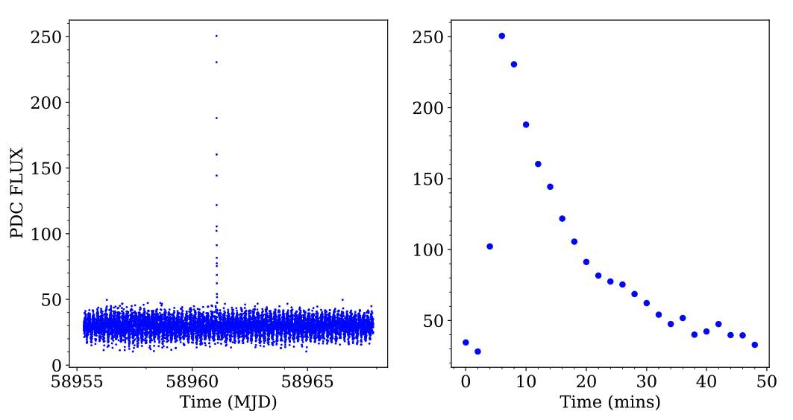
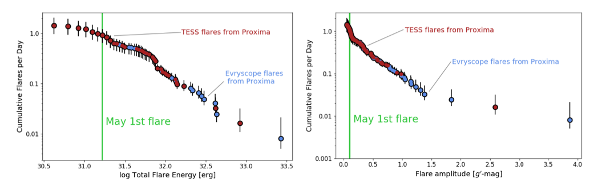
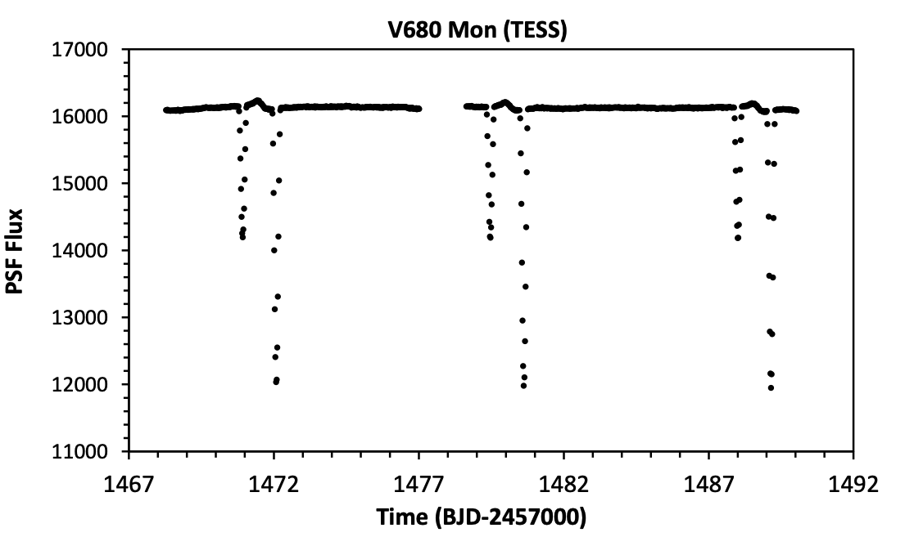

STATUS UPDATE: Orbit 1 of Sector 37 is now available to download as a TICA product from MAST
Hello TESS followers and welcome to this weeks news bulletin. This week we have three papers from the archive, enjoy!
Detection of an energetic flare from the M5V secondary star in the Polar MQ Dra (Ramsay et. al., 2021):
In this paper the authors study TESS observations of MQ Dra, a highly magnetic cataclysmic variable. The MQ Dra system contains a white dwarf that is accreting material at a low rate from its secondary star (type M5V) via stellar winds. TESS has observed this object in four sectors (16,22,23,24) of Cycle 2, with data indicating a short duration, high energy flare of ~1035 erg, with a profile that suggests it is coming from the secondary star.
An energetic flare from a polar is a rare event and there is no evidence that this flare changed the light curve of the system following its occurrence. The authors consider if a coronal mass ejection was associated with the flare.
The authors go on to compare the frequency of flares from the MQ Dra secondary with M dwarf stars and discuss the overall flare rate of stars with rotation periods shorter than 0.2 days. The authors also discuss how fast rotators can generate magnetic fields with low differential rotation rates.
Discovery of an Extremely Short Duration Flare from Proxima Centauri Using Millimeter through FUV Observations (MacGregor et. al., 2021):
On the 1st of May 2019 an extreme flaring event from Proxima Centauri was discovered by multiple facilities - ASKAP, ALMA, HST, TESS, and the du Pont Telescope. The Proxima Cen system is an important one since it is our closest exoplanatary system (1.3pc), and has a potentially Earth-mass planet at an equilibrium temperature of ∼230 K. Proxima Cen is also well established as an M-type flare star, and thus it is a benchmark case for studying the effects of such activity on planetary systems.
The flare event itself was the brightest ever detected in the millimeter and far-UV, brightening by a factor of > 1000 in ALMA and > 14000 in HST. Given that the millimeter and FUV continuum emission trace each-other closely during the flare, it suggests that the millimeter emission could act as a proxy for the FUV for stellar flares. This is an important result as it provides a powerful tool to constrain the high energy radiation environments for exoplanets.
In the optical the emission is much lower at peak and there is a time-delay. Using TESS data a bolometric energy of 1031.2 erg was measured by Vida et. al., (2019). TESS has also observed 71 other flares from Proxima Cen with similar energies (1030 - 1032 erg) across 50 days of observations (Howard et. al., 2018). All data indicates that the May flare is common in the optical, but extreme in the millimeter and FUV which in turn suggests that the optical intensity does not necessarily scale to flare energies at other wavelengths and demonstrates the utility of multi-wavelength coverage.
The initial burst has an extremely short duration, lasting for less than 10 seconds. Taken together with the growing sample of millimeter M dwarf flares, this event suggests that millimeter emission is actually common during stellar flares and often originates from short burst-like events. See this paper for more information in addition to the NASA news feature on the system.
V680 Mon -- a young mercury-manganese star in an eclipsing heartbeat system (Paunzen et. al., 2021):
Using spectra from the Large Sky AreaMulti-Object Fiber Spectroscopic Telescope, in addition to their own observations, the authors of this paper have identified the primary component of V680 Mon (an eclipsing binary system), as a chemically peculiar (CP) star. Specifically the CP star is of the mercury-manganese (HgMn/CP3) group, with a spectral type kB9 hB8 HeB9 V HgMn. This is a rather homogeneous group which is identified by the presence of strong Hg II and Mn II lines in the optical spectra and occupy the restricted spectral-type range between B6 and A0.
Time series data from TESS has also indicated that the system is a "heartbeat star", a rare class of eccentric binary stars with short periods which have a characteristic signature near the time of periastron in the light curves due to the tidal distortion of the components.
Using all data and ELISa, the authors update the ephemeris and binary system parameters, deriving a secondary star effective temperature is 8300 K (spectral type A4). This system is relatively rare with V680 Mon being the fifth know eclipsing mercury-manganese CP star, and the first in a "heartbeat" binary. Please see the paper for more information about this system.

Fig. 1: Taken Ramsay et. al., (2021). The left hand panel shows the light curve taken from the first half of TESS sector 24 and the right hand panel shows the light curve focused on the flare where the time has been converted to show the time in mins from close to the start of the flare.

Fig. 2: Taken MacGregor et. al., (2021). Flare frequency diagrams indicating that this flare is relatively weak in the optical when compared against all other stellar flares observed from Proxima by Evryscope and TESS. The authors find flares of equal or greater energy (left) and amplitude (right) to the May 1st flare occur once per day in the optical. Evryscope observations included span Jan 2016 to August 2018, while TESS observations span April 2019 to May 2019. Flare energies are converted from each bandpass to bolometric energy.

Fig. 3: Taken Paunzen et. al., (2021). TESS light curve of V680 Mon, accessed via ’eleanor’ and based on PSF flux.